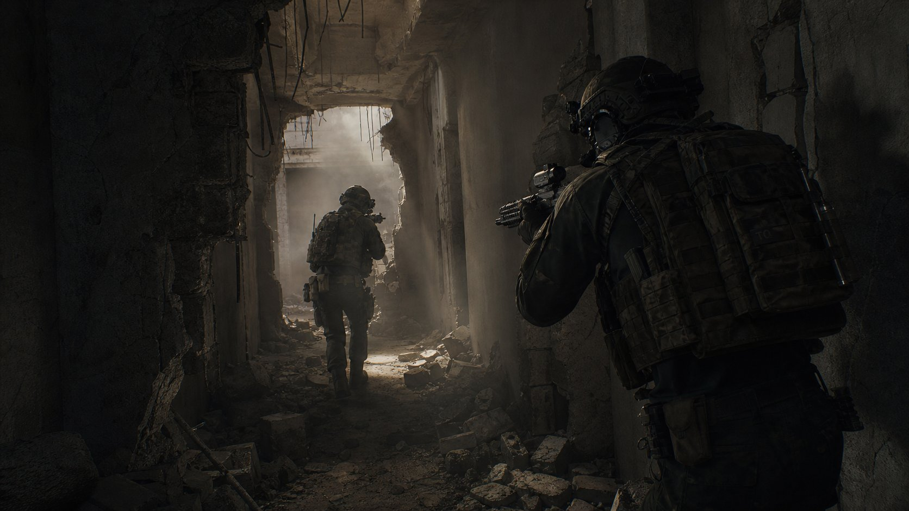

1. Mouvement : la discrétion est une arme
- Crouch-walk systématique en zone contestée : la vitesse de sprint est audible à 30+ mètres ; la marche accroupie réduit le rayon de détection sonore de moitié.
- Changez d'angle après chaque engagement : un ennemi qui a vu votre position pré-visera votre réapparition. Le peek doit toujours être latéral (shoulder peek), jamais vertical tant que le niveau le permet.
- Lean (Q / E) : exposez 20 % de votre corps, pas 100 %. C'est la différence entre être touché et ne pas l'être.
- Jiggle peek pour forcer l'ennemi à se révéler ; wide peek pour engager quand vous avez l'avantage d'information.
- Stamina : ne jamais arriver au combat en sprint. Un personnage essoufflé tire moins vite et vise moins juste.
2. Gestion des angles : la géométrie du combat
Chaque angle se divise en trois zones : near (0–15 m), mid (15–60 m), far (60 m+). Un bon ABI player ne combat jamais sur le timing de l'ennemi :
| Angle | Mentalité | Action |
|---|---|---|
| Angle mort piqué | L'ennemi sait que vous savez | Pré-fire ou nade, jamais un peek « au cas où » |
| Angle ouvert long | Avantage au premier tir | Hold + headshot renforcé S7 = duel gagné |
| Angle aveugle double | Deux menaces superposées | Clear dans l'ordre, jamais les deux en même temps |
| Angle de repli | Porte de sortie | Identifiez-la AVANT chaque engagement |
La règle d'or du S7
La Saison 7 a augmenté la portée effective des armes et renforcé les headshots. Tenir un angle long n'a jamais été aussi rentable — et sprinter dans un couloir ouvert jamais aussi risqué.
Avant de jouer : les réglages
La gestuelle ne vaut que si le client ne vous trahit pas. La sensibilité se règle par grossissement, le Focal Point — le point central — vous donne un repère de hip-fire à condition de connaître son décalage, et le preset de visibilité décide si vous voyez un ennemi à 40 mètres. Le détail de chaque réglage est dans le guide dédié : Réglages & sensibilité.
3. Information : gagner avant le combat
- Headset > tout : un bon casque audio (voir notre guide dédié) révèle les pas à travers les murs fins. Priorisez-le sur une armure de plus.
- Beacons sonores : munitions tirées = position révélée. Après 1-2 chargeurs ennemis, vous connaissez la zone à ±10 m.
- Timer tiers-partis : le combat moyen dure 45–90 secondes. Le troisième larron arrive à l'expiration. Ne looter pas à ce moment-là : surveillez.
- Dogtags : en S7, l'inspection des dogtags a été améliorée. Elles servent de preuve de kill mais aussi de monnaie d'extraction (Valley Helipad : 2 dogtags requis).
- Bruit des extracteurs : une extraction active attire les joueurs en rotation. Approchez par l'arrière, jamais de face.
4. Médical sous le feu : l'ordre des priorités
- Stopper le saignement (garrot / bandage compressif) — première seconde.
- Fractures (attelle) — la mobilité avant tout.
- HP jusqu'au seuil de survie — pas au max, juste au-dessus du dégât prochain attendu.
- Antalgiques (analgésiques) — pour la vitesse et l'anti-douleur en S7 où les hits aux jambes sont dévastateurs.
- Stims régénérantes — en combat prolongé, pas en extraction : chaque seconde compte.
Astuce de vétéran
Pré-médication + Hidden Compartment (Core Mastery S7) = un mid-raid heal silencieux sans jamais ouvrir l'inventaire principal. Combinez avec Acoustic Earpads pour neutraliser les pics sonores.
Trois postures, trois conséquences
Avant de décider si vous combattez, vous devez déjà savoir dans quelle posture vous êtes. La posture est le résultat de trois variables, et elle décide de ce que vous pouvez faire dans les cinq secondes qui suivent le premier contact.
| Posture | Condition | Ce que vous pouvez faire | Ce que vous ne pouvez pas faire |
|---|---|---|---|
| Stable | Arme pointée, angle dégagé, issue connue | Tirer le premier, prendre l'angle, engager | Rester exposé plus d'une seconde |
| Fragile | En mouvement, sans issue identifiée, ou sous le feu | Se déplacer, chercher un angle, se replier | Tirer sans cible identifiée |
| Engagé | Échange de tirs déjà commencé | Rompre l'échange, gagner l'angle, décider vite | Reculer en arrière : c'est reculer de profil |
L'erreur la plus fréquente des joueurs intermédiaires est de tirer dans la posture fragile. Un tir sans cible identifiée ne se défend pas et ne s'annule pas : il révèle votre position, consomme votre munition et informe l'adversaire. Dans la posture fragile, le seul tir acceptable est le tir de riposte, celui qui répond à un tir déjà reçu.
Les trois sections de mission qu'il vaut mieux sauter
La progression de faction passe par des sections de mission, et trois d'entre elles sont les plus pénibles du jeu au regard de ce qu'elles rapportent. Les sauter est un choix rationnel, pas une triche.
| Section | Ce qu'elle impose | Coût réel |
|---|---|---|
| Exploration souterraine | Survivre à dix extractions en mission urgente | Le trafic des zones à forte affluence en fait un goulot d'étranglement économique |
| Perturbation interne | Extraire par un ascenseur de second étage très exposé, avec restriction des grenades | Un piège à wipe d'équipe : l'ascenseur est un couloir préparé et la restriction supprime votre réponse |
| Interférences de communication | Interagir avec un marchand précis dix fois, avec un plafond de deux interactions par déploiement | Cinq raids minimum, pour un reward final faible |
Le principe commun aux trois : elles imposent soit un risque disproportionné, soit une répétition mécanique qui coûte plus de temps qu'elle ne rapporte de progression. L'option de contournement existe pour chacune. Les ressources restantes à commercer avec se répartit sur les sections qui ne demandent ni position exposée ni répétition.
Statut de cette information : retour communautaire. Un guide de survie de Saison 7 publié sur Reddit signale ces trois sections et l'existence d'une option de contournement. Les notes officielles de saison ne détaillent pas section par section, donc vérifiez dans votre propre interface que l'option est bien active avant de foncer.
Jouer seul : la discipline qui rend le solo viable
Le jeu n'offre pas de file solo : vous êtes toujours matché contre des équipes. Mais la valeur extraite en solo est statistiquement supérieure, puisque vous ne partagez rien. Trois règles suffisent à en profiter.
- Les fumées d'abord. Le conseil le plus répété des joueurs solitaires : beaucoup de fumées, un tir, puis un déplacement. La fumée coupe la ligne de vue de l'équipe adverse pendant que vous supprimez un membre, et vous vous repositionnez avant qu'ils ne vous reacquièrent.
- Se repositionner après chaque tir. Dès que vous tirez, votre position est connue. Un joueur solitaire qui reste immobile contre une équipe est un joueur solitaire qui meurt du flanc.
- Combattre pour la sortie, pas pour la carte. Remplissez le sac sur un ou deux kills et partez. Chaque minute supplémentaire en raid est une minute de plus pendant laquelle une équipe converge vers vous.
Si vous voulez la valeur la plus forte en mode PvE sans le risque PvP, la réponse est le Secteur hostile sur Farm et Northridge, où les équipes ne peuvent pas s'infliger de dégâts, et l'Infiltration solo par tickets, qui donne accès à la carte en solo ou en équipe réduite. La queue solo n'existe pas, mais l'Infiltration solo si.
5. La matrice de décision : combattre ou disparaître ?
Avant chaque engagement, posez-vous quatre questions. Deux « non » = disengage.
| Question | Si NON |
|---|---|
| Ai-je le meilleur angle ou la surprise ? | Changez de position ou contournez |
| Ai-je assez de HP / munitions pour 2 duels ? | Battez en retraite, heal, revenez |
| Le loot potentiel justifie-t-il le risque ? | Laissez le corps, gardez votre stash |
| Un tiers-parti arrive-t-il après ? | Terminez vite ou disparaissez |
Les quatre questions à se poser avant d'entrer
L'économie se décide avant l'extraction, pas pendant. Quatre questions suffisent à trancher, et elles se posent dans cet ordre.
- Quel est mon objectif de raid, en objets et non en Koen ? Une mission précise justifie un risque précis. Un raid « pour voir » se termine en perte sèche dans plus de la moitié des cas.
- Quel est le coût total de mon échec ? Valeur de l'équipement, munitions consommées, clé perdue. Si ce total dépasse ce que le raid peut rapporter, le raid est perdant avant même de commencer.
- Quelle est ma marge de sortie ? Combien d'options ai-je de quitter la zone sans combat ? Une seule, c'est un piège : il faut toujours pouvoir partir sans tirer.
- Quel est mon seuil d'engagement ? À partir de quel point je décroche ? Ce seuil doit être écrit avant le raid, sinon c'est l'orgueil qui le fixe au moment de l'affrontement.
Le seuil d'engagement est le seul de ces quatre éléments que les joueurs ne définissent jamais à l'avance, et c'est le plus déterminant. Un seuil écrit, même approximatif, transforme un duel perdu en raid terminé. La règle la plus rentable du jeu tient en une phrase : partir avant d'être engagé coûte presque toujours moins cher que gagner un combat que vous ne saviez pas éviter.
6. L'économie au combat
Chaque balle a un coût. Les vétérans ne gaspillent pas : ils tirent en rafales contrôlées, visent la tête (S7 buff), et ne poursuivent jamais un ennemi hors de leur zone de confort. Un combat gagné à 100 munitions = victoire ; un combat gagné à 400 = stash en danger.
Saison 7 : le nouveau meta
Avec la suppression du RNG de pénétration T5/T6, les duels haut de gamme sont plus lisibles : la meilleure munition gagne presque toujours. Plus de « j'ai perdu contre du T5 qui passait pas ». Lisez notre analyse complète des balance changes.
Prochaine étape
Maîtrisez l'art de la sortie : Guide Extraction — les rituels, les pièges et les timings qui font la différence entre un raid réussi et un raid raté.